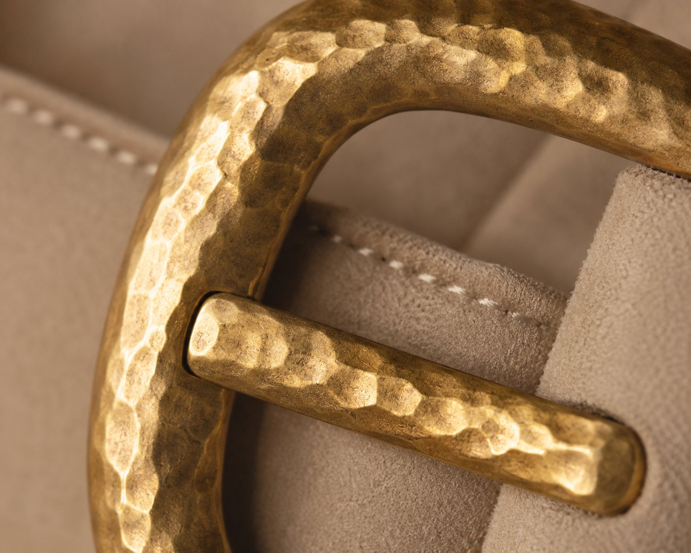
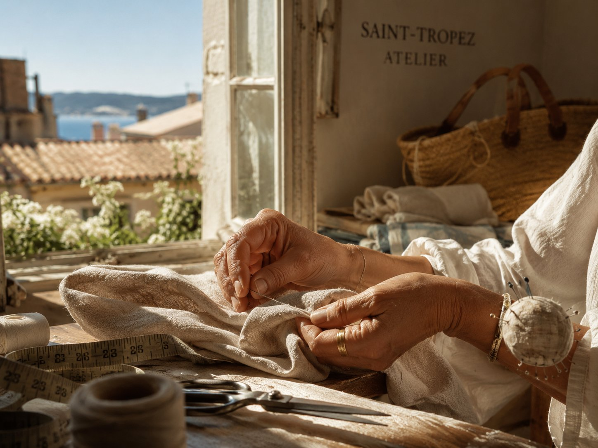

Look 01
La Robe Méridienne
A single seam, like a line on the horizon.

Maison midi — Saint-Tropez
Ready-to-wear and exceptional pieces, shaped in the light of the Midi.
The Manifesto
There is an hour, between zenith and shadow, when the Mediterranean stops shimmering and starts to dazzle. midi. is born of that raw light — the kind that forgives nothing, not the fabric, not the silhouette. We cut for that hour.

The Editorial
Where others sew shadows, midi. cuts into raw light — no retouching, no lies.
Look 01
La Robe Méridienne
A single seam, like a line on the horizon.

Look 02
Le Blazer Rade
The shoulder set straight, the sea calm.

Look 03
Le Drapé Solaire
A fold for every hour of the day.

Look 04
La Chemise Hublot
The collar open to the open sea.

Look 05
Le Manteau Zénith
A cast shadow, cut from the light.

Look 06
La Combinaison Or Brûlé
The skin of evening, woven at noon.
The Materials
Each season, only three materials — chosen for how they remember the sun. Linen from Normandy, loosely woven to breathe through the heat of the Gulf. Silk from Lyon, hand-lined. Brass, hammered like the fittings on the sailboats in the port.

Splendor is not draped.
It reveals itself.
The Atelier in Numbers
2019
Birth of the maison midi.
6
Silhouettes per collection, never more
18h
Average time to shape one piece

The Craft
In our ateliers in the Gulf of Saint-Tropez, every fabric is cut by hand by artisans trained in the gestures of the great houses. The thread, the drape, the cut: nothing is left to chance, everything is left to time.
midi. does not produce collections. It shapes hours — the ones when light, at last, tells the truth about what we wear.
Discover the atelier →The midi Circle
By signing up, you agree to receive news from the maison midi.